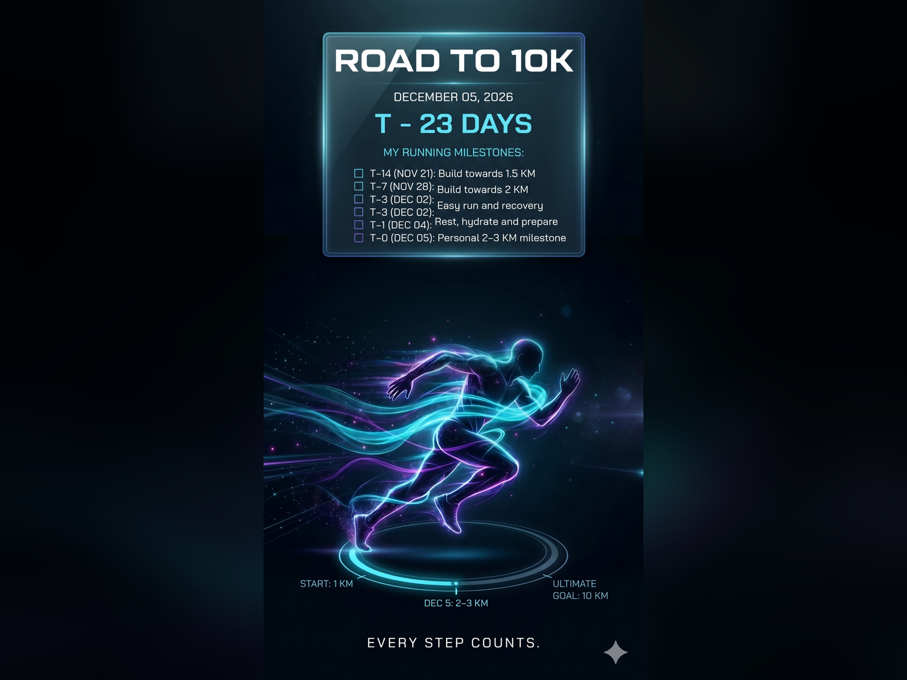
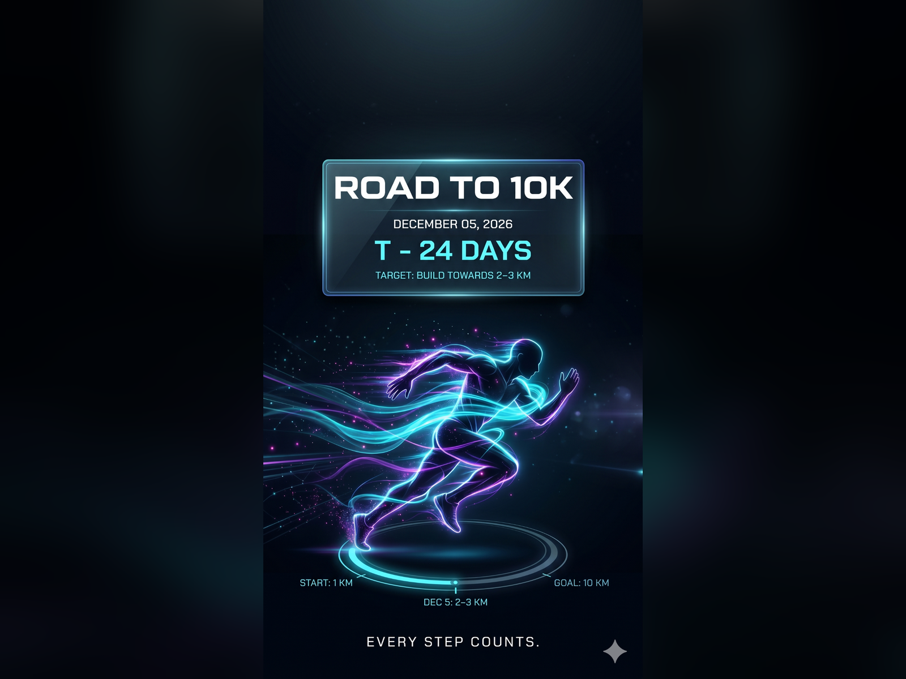

THE DISTANCE IS BUILT, NOT GIVEN
One kilometre
at a time.
Set a distance goal and finish date that feel right for you. Start where you are, keep a simple log, and build toward 10K and beyond.
— days to your goal date

THE LONG GAME
Progress you can feel.
LONGEST RUN
1.0km
STARTYOUR DISTANCE GOAL 10 KM
1 km10% of your goal10 km
km
Choose your dates and a distance from 1 to 100 km. Your plan updates automatically.
Dates saved in this browser.Distance goal saved in this browser.A GENTLE DAILY CHECK-IN
Your day, in your numbers.
Bring over the stats your watch recorded. You choose what to track, and you can update a day whenever you need.
WATCH SYNC · MANUAL FOR NOW
Enter readings from your watch app here. Automatic Apple Health or Android Health Connect syncing needs a phone companion app; support depends on the watch and its app.
Manual for now
This browser can save manual entries. It cannot request watch-health permissions.
YOUR CHECK-INToday
STEPS—Add a daily total
stepsACTIVE CALORIES—Use your watch’s estimate
kcalHEART RATE—Add a reading from your watch
bpmA little week at a time
The last seven days
Your weekly view will grow with each check-in.
Step totals for the selected day and the six days before it.
A PLAN WITH ROOM TO BREATHE
Small steps. Strong finish.
Your milestones adjust to the distance goal and date you choose. Keep each run comfortable, listen to your body, and let the distance grow at its own pace.
THE FIRST PAGES
A goal becomes real when you can see the next step.
These original posters mark the beginning. Their printed dates stay as they were; the checkpoint and training plan above follow the date you choose.

YOUR MILES, YOUR STORY
Keep a little proof.
Add a run whenever you’re ready. Your entries stay in this browser on this device.